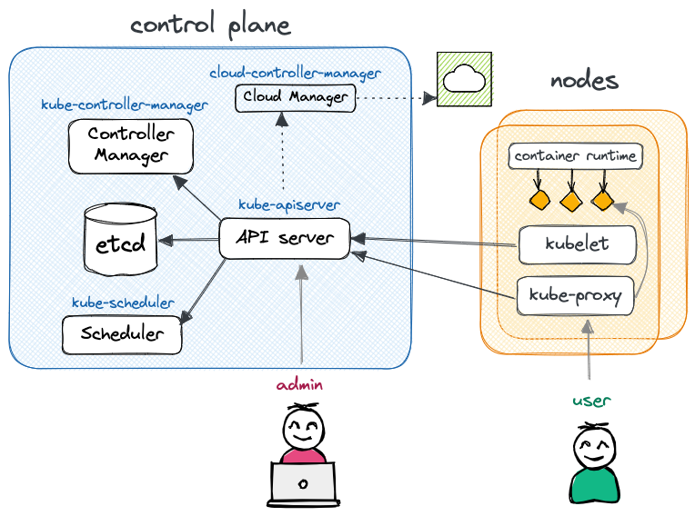

The Cluster
We first need a Kubernetes cluster. As mentioned in the introduction, there are lots available. Instead of running locally (using e.g. k3d), let's use the Scalable Kubernetes Service (SKS) from Exoscale, using the starter pricing tier.
For the time being, consider "pod" a synonym for a container. We will see later the difference between regular containers and k8s pods.
Using a local Kubernetes cluster
If you do not have an account on Exoscale, or simply do not want to use a managed cluster, you can run everything on your machine using Kubernetes in Docker. For more information, head to the Want to work locally? section on this page.
Spawn an SKS cluster¶
You'll find a terraform module in this repository that you can use to spin up your own. The only thing you need is a valid API key and secret.
Login to Exoscale, navigate to IAM > API KEY and create a new key. On your terminal, do:
TF_VAR_exoscale_api_key=<your key>
TF_VAR_exoscale_api_secret=<your secret>
Now you are ready. Navigate to terraform and run:
terraform init
terraform plan
terraform apply -auto-approve
Wait a few minutes, and boom! You have a Kubernetes cluster. Copy and paste the output in your terminal, something like:
export KUBECONFIG=...; kubectl cluster-info
Finally, install the Nginx Ingress Controller by running:
## Ensure you exported KUBECONFIG=... first!
kubectl apply -f https://raw.githubusercontent.com/kubernetes/ingress-nginx/main/deploy/static/provider/exoscale/deploy.yaml
(The Nginx Ingress Controller was initially installed in terraform - see terraform/main.tf,
but the destroy often fails, so better to do it manually.)
Don't forget to stop the cluster
Once you finished experimenting, don't forget to destroy your cluster to avoid unecessary costs:
# Uninstall Nginx Ingress Controller first,
# or the load balancer on exoscale will stay there and cost you
kubectl destroy -f https://raw.githubusercontent.com/kubernetes/ingress-nginx/main/deploy/static/provider/exoscale/deploy.yaml
# Then destroy the cluster
terraform destroy -auto-approve
What composes a Kubernetes cluster?¶
Kubernetes is a distributed system that consists of two main components: the control plane and the nodes. You communicate with the API server running in the control plane, and it takes the necessary action to make your workload run on some worker node(s).
Need an analogy? Checkout Demystifying the Nuts & Bolts of Kubernetes Architecture and What is Kubernetes? Confused? Kubernetes and its Architecture Explained in Plain English

The control plane is responsible for managing and orchestrating the various workloads that run on the nodes. It typically runs on a dedicated set of machines (separated from the worker nodes) and includes several key components:
- API Server (
kube-apiserver) - The API server acts as the control plane's frontend, providing a RESTful API for users and other components to interact with.
- etcd
- etcd is a distributed key-value store that stores the cluster's configuration data and provides a reliable storage layer for the control plane. As you will see, k8s is declarative. All the states of the nodes, workloads, etc (in YAML or JSON format) are stored in etcd.
- Scheduler (
kube-scheduler) - The scheduler is responsible for determining which nodes in the cluster should run which pod. It takes into account many things such as the resource needs of the pods, such as CPU or memory, and the health of the cluster to make a decision.
- Controller Manager (
kube-controller-manager) - The controller manager is responsible for running the core controllers that regulate the state of the cluster: Node controller (nodes down or added), Job controller, EndpointSlice controller, ServiceAccount controller, etc. Logically, each controller is a separate process, but to reduce complexity, they are all compiled into a single binary and run in a single process.
- (optional) Cluster Controller Manager (
cloud-controller-manager) - The cluster controller manager is only present when running a managed Kubernetes in the cloud (vs on-prem). It embeds cloud-specific logic specific to your cloud provider e.g. to manage routes, load balancers, nodes, etc.
The nodes, on the other hand, are the actual worker machines that run the containers and workloads and are managed by the control plane (communicating through the API server). A node includes the following components:
- Container runtime
- The software responsible for running containers. It can be any implementation of the Kubernetes CRI (Container Runtime Interface), but most usually containerd or CRI-O.
kubelet- kubelet is the agent responsible for managing Kubernetes pods on the machine, ensuring they are running and healthy. It also constantly communicates with the control plane about the status of the nodes and the containers running on it.
kube-proxy- kube-proxy maintains network rules on nodes, to allow network communication to pods from network sessions inside or outside the cluster.
It typically relies on
iptables(if available).
In the most minimal setup (e.g. k3d), one control plane and one node can run on a single machine. For a minimal HA - high availability - cluster, one would rather have three machines: one control plane and two workers. More nodes can be added to sustain the workload, and it is recommended to also make the control plane fault tolerant by scaling it horizontally on multiple machines.
What was installed?¶
When creating the SKS cluster above, we created:
- a Kubernetes control plane (with an Exoscale Cloud Controller Manager),
- an Exoscale nodepool, which provisioned two compute instances that were registered as Kubernetes nodes (or worker nodes).
Additionally, Exoscale's SKS automatically installs:
- The CNI1 plugin Calico: to manage the cluster network and add support for network policies, security, and better encapsulation; see Kubernetes CNI Explained.
- CoreDNS: a DNS server that provides service discovery and name resolution for Kubernetes services and pods, allowing them to communicate with each other using human-readable domain names;
- Konnectivity: a tool that enables secure, in-cluster communication between nodes and pods across different Kubernetes clusters, providing a way to establish encrypted and authenticated connections over the public internet;
- Metrics server: an agent that collects resource metrics
from Kubelets and exposes them through the Kubernetes API server (
kubectl top).
But this is not all! The terraform script also potentially adds (see comments in terraform/main.tf):
- The NGINX Ingress Controller: to provide extrernal
access and manage routes (i.e.
Ingress) based on hosts, path prefix, etc. - Longhorn: a distributed block storage system that provides reliable and scalable persistent storage for stateful applications.
Discover your cluster¶
After exporting the KUBECONFIG environment variable, you can use kubectl to discover and interact with your cluster.
kubectl is using HTTP requests to the API Server under the hood.
Get general information:
kubectl cluster-info
Kubernetes control plane is running at https://xxxx.sks-ch-gva-2.exo.io:443
CoreDNS is running at https://xxxx.sks-ch-gva-2.exo.io:443/api/v1/namespaces/kube-system/services/kube-dns:dns/proxy
Get the list of nodes:
kubectl get nodes
NAME STATUS ROLES AGE VERSION
pool-cb5ee-stszx Ready <none> 147m v1.26.3
pool-cb5ee-uqiut Ready <none> 147m v1.26.3
Note that above, only the worker nodes are shown (no role). This is because the control plane nodes
are managed by Exoscale and thus hidden. If you were to execute this command on a local k3d cluster,
you would see a single node with roles control-plane,master.
See the nodes running in the kube namespace:
kubectl get pod -n kube-system
NAME READY STATUS RESTARTS AGE
calico-kube-controllers-5f94594857-dcbjh 1/1 Running 0 150m
calico-node-66kpj 1/1 Running 0 149m
calico-node-jfbcj 1/1 Running 0 149m
coredns-7cd5b7d6b4-c82vx 1/1 Running 0 150m
coredns-7cd5b7d6b4-vbdns 1/1 Running 0 150m
konnectivity-agent-799d489b4f-6gt5b 1/1 Running 0 150m
konnectivity-agent-799d489b4f-pdpls 1/1 Running 0 150m
kube-proxy-njsgs 1/1 Running 0 149m
kube-proxy-smfdm 1/1 Running 0 149m
metrics-server-77cc46c76-mlwkn 1/1 Running 0 149m
We have two worker nodes, thus two instances of most services: one for each!
Finally, have a look at the metrics exposed by the Metrics server:
kubectl top node # or top pod
NAME CPU(cores) CPU% MEMORY(bytes) MEMORY%
pool-cb5ee-stszx 89m 4% 1094Mi 65%
pool-cb5ee-uqiut 121m 6% 1402Mi 83%
Use a UI¶
Using kubectl may be tiring. Let's use a UI!
There are lots of dashboards available. Here are my two personal favorites.
k9s: A terminal-based UI.

Lens: a Kubernetes dashboard and IDE running on your local machine. Once installed, go to Files > Add cluster and copy the content of your kubeconfig inside.

Want to work locally?¶
Install k3d, a lightweight wrapper to run k3s (Rancher Lab’s minimal Kubernetes distribution) in docker.
Once done, you can create a cluster using k3d cluster create. By default, k3d installs a cluster with
the traefik ingress controller.
Since we are using the Nginx ingress controller in this demo, we need to disable traefik and install
nginx.
Create a cluster:
k3d cluster create nginx \
--k3s-arg "--disable=traefik@server:0" \
--api-port 6550 -p "8081:80@loadbalancer"
In the command above, we:
- give a prefix to the name of the cluster -
nginx- so the cluster name will bek3d-nginx(try runningkubectx), - ask k3d to map the API Server port to the port
6550on our local machine (the host), - ask k3d to map the Load Balancer port to the port
8081of our local machine (remember everything runs on Docker!).
You can of course change any of those values.
Next, install the Nginx ingress controller:
kubectl apply -f https://raw.githubusercontent.com/kubernetes/ingress-nginx/master/deploy/static/provider/cloud/deploy.yaml
You are good to go! You can now follow along. Note that you will see some differences in the outputs, but not that many. Just remember:
- your k8s cluster only has one node, which is both a control plane node and a worker node,
- to access your load balancer, use http://localhost:8081 (or any port you supplied during the cluster creation). It means you will have to access the rickroller app using http://localhost:8081/rickroller when we will be talking about ingresses.